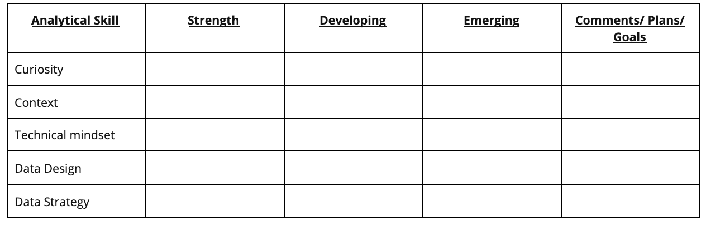

EXPLORING CORE ANALYTICAL SKILLS
Analytical skills are qualities and characteristics associated with solving problems using facts.
There are a lot of aspects to analytical skills, but, we'll focus on five essential points.
They are curiosity, understanding context,
having technical mindset, data design, and data strategy.
Curiosity is all about wanting to learn something. Curious people usually seek out new challenges and
experiences. This leads to knowledge.
Context is the condition in which something exists or happens. This can be a structure or an environment.
A simple way of understanding context is by counting to 5. One, two, three, four, five. All of those
numbers exist in the context of one through five.
A technical mindset involves the ability to break things down into smaller steps or pieces and work
with them in an orderly and logical way.
Data design is how you organize information.
Data strategy is the management of the people, processes, and tools used in data analysis.
Now let's explore your own analytical strengths and weaknesses and your goals for the future.
By the time you complete this activity, you will have a stronger understanding of your analytical skill
set and how you can practice and improve them. These analytical skills are key to helping you
solve problems and create insights using data analysis. Thinking about them now will help you
grow as a data analyst!
The analytical skills table

The table has a row for each essential aspect of analytical skills:
- Curiosity: a desire to know more about something, asking the right questions
- Understanding context: understanding where information fits into the “big picture”
- Having a technical mindset: breaking big things into smaller steps
- Data design: thinking about how to organize data and information
- Data strategy: thinking about the people, processes, and tools used in data analysis
You will put an X in the column that you think best describes your current level with each aspect. The three ratings are:
- Strength: This is an area you feel is one of your strengths
- Developing: You have some experience with this area, but there’s still significant room for growth
- Emerging: This is new to you, and will gain experience in this area from this course
This note is part of Google Data Analytics Specialization Course that I attended in 2021.